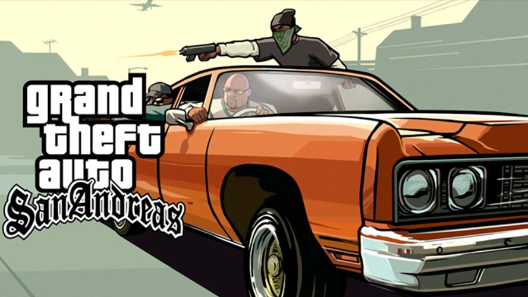

Clásicos para jugar un domingo a la tarde
Crash Bandicoot (cualquiera de la trilogía)

Crash es el tipo de juego que te hace reír, frustrarte y sonreír todo al mismo tiempo. Los niveles están pensados para que los puedas pasar rápido, pero siempre querés intentar mejorar. Tiene ese estilo de “juego de la infancia”: simple, colorido, directo. Ideal para jugar relajado… o para competir con alguien en casa a ver quién lo pasa primero sin perder vidas.
Need for Speed: Most Wanted (2005)

Si te gustan los juegos de autos, este es EL juego. Most Wanted mezcla carreras callejeras con una historia simple y directa. tenés que subir en la lista negra de pilotos y recuperar tu auto. Pero lo mejor son las persecuciones policiales. Helicópteros, autos patrulla, bloqueos, clavos... Todo para frenarte. Ese momento donde estás a nada de escapar y suena esa música electrónica que sube la adrenalina es inolvidable.
Super Mario World

Super Mario World es uno de esos juegos que te transportan al instante a la infancia. Sus colores, su música y sus niveles simples pero ingeniosos hacen que todo se sienta liviano y divertido. No importa cuántas veces lo hayas jugado, siempre aparece un detalle nuevo, un secreto escondido o simplemente esa sensación de estar jugando algo hecho con amor. Es el tipo de juego que podés agarrar un domingo, relajarte y disfrutar sin pensar demasiado.
FIFA

El clásico de los domingos. No falla. No importa si jugás solo o con amigos: siempre termina siendo divertido. Podés jugar un partido rápido, un torneo o un modo carrera si querés algo más largo. Y si jugás contra alguien conocido… bueno, ahí sí puede que terminen discutiendo quién es “mejor con el joystick”, pero siempre con risas de por medio.
Minecraft

Minecraft es libertad absoluta. Si lo jugás en creativo, podés construir lo que quieras: casas, castillos, ciudades, lo que se te ocurra. Es casi terapéutico. Si jugás en supervivencia, tenés una aventura tranquila: explorar cuevas, minar, cultivar, conseguir recursos, mejorar tu casita y ver caer el atardecer en el juego mientras suena la música suave. Es el juego perfecto para bajar los niveles de ansiedad y estar tranquilo.
GTA San Andreas
GTA San Andreas es uno de esos juegos que nunca envejecen. Podés recorrer la ciudad, hacer misiones, tunear autos o simplemente salir a pasear sin ningún objetivo en especial. Su historia, la música y el ambiente están tan bien hechos que volver a jugarlo se siente como visitar un lugar que ya conocés. Es perfecto para esos días en los que solo querés relajarte y jugar algo que te haga sentir en casa.